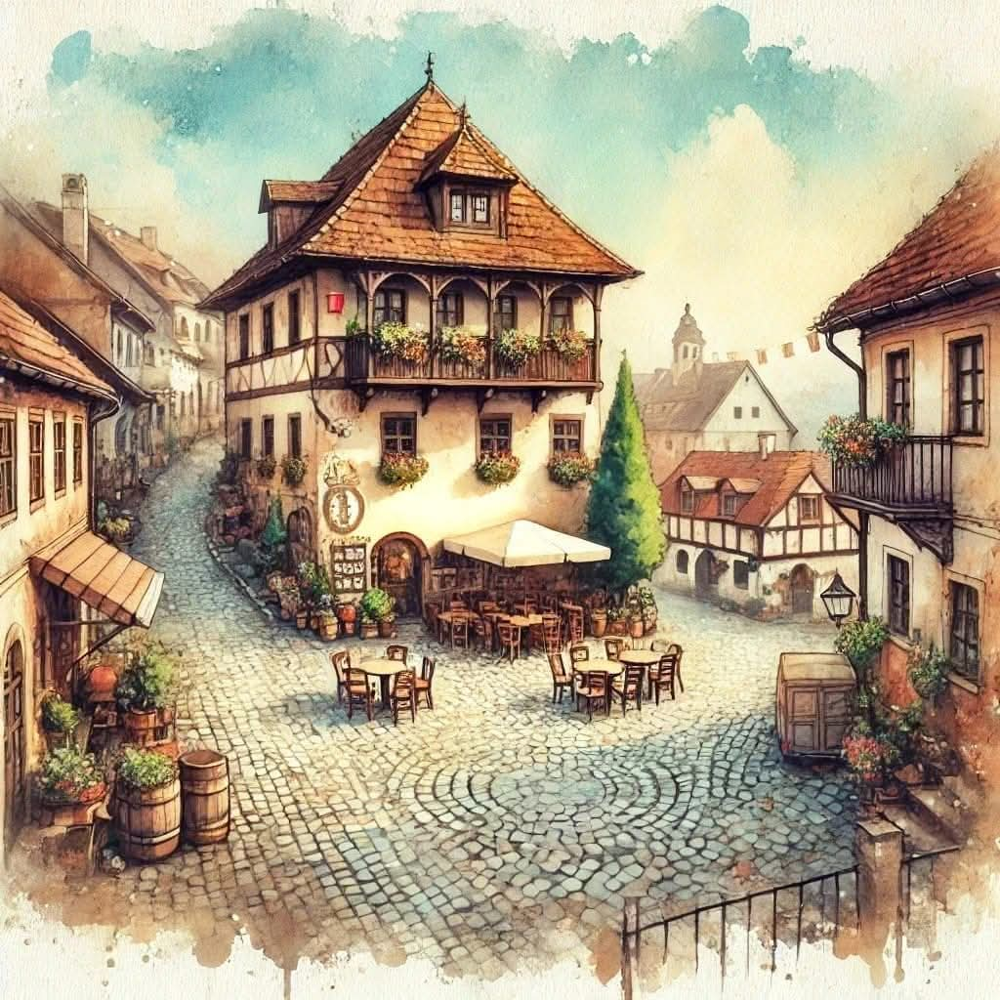

Augantis romanas
Grifų sala
Moteris su dukra pabėga į mažą pajūrio miestelį, kuriame jų laukia nykstanti sala ir seniai nutrūkusi paslaptis.
Naujos dalys pirmadieniaisPirmas skyrius
Skyrius atsiveria…

Augantis romanas
Moteris su dukra pabėga į mažą pajūrio miestelį, kuriame jų laukia nykstanti sala ir seniai nutrūkusi paslaptis.
Naujos dalys pirmadieniaisPirmas skyrius
Skyrius atsiveria…